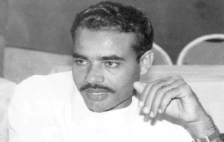
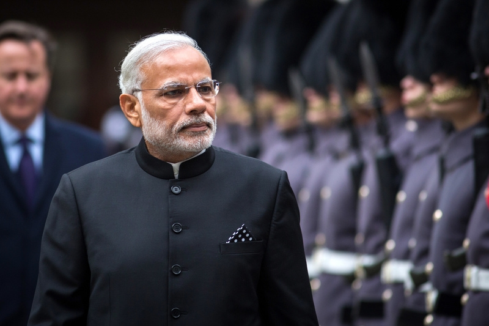

His early Life
Narendra Damodardas Modi was born to a family of grocers in a town called Vadnagar in Mehsana district of Gujarat. He was born on 17 September, 1950 to Damodardas Mulchand Modi and Heeraben Modi. The couple had six children among which Narendra Modi was the third eldest.
Modi completed his studies against all odds. His saga of struggle began when as a teenager, he, along with his brother, used to run a tea stall near a railway station in Ahmedabad. He did his schooling from Vadnagar and obtained a master's degree in Political Science from Gujarat University. One of his school teachers described him as an average student but a brilliant debater. During his college days, he worked as a 'pracharak' (promoter) of the Rashtriya Swayamsevak Sangh (RSS). He left home at the age of 17 years and travelled across the country for the next two years.
At a later stage, during the 1990s, when Modi served as the official spokesperson of the BJP in New Delhi, he completed a three-month long course in the US on public relations and image management.
His Political Journey
Biggest Achievements of Narendra Modi-led Government
The Modi government has started many welfare schemes all over the country. Some of the important schemes launched are :
Swachh Bharat Mission
On 2nd October 2014, this mission was launched throughout length and breadth of the country as a national movement.
Ujala Yojana
State run Energy Efficiency Services Ltd (EESL) has distributed over 30 crore light emitting diode (LED) bulbs across country under zero-subsidy
Make in India
This campaign facilitates investment, fosters innovation, enhance skill development and protect intellectual property.
Atal Pension Mission
It was launched to create a universal social security system for all Indians, especially the poor, the under-privileged and the workers in the unorganised sector.
Skill India Mission
The Mission has been developed to create convergence across sectors and States in terms of skill training activities.
Beti Bachao Beti Padhao
The goal of this scheme is to make girls socially and financially self-reliant through education.
Digital India Mission
This is a flagship programme of the Government of India with a vision to transform India into a digitally empowered society.
Start-up India
This is intended to catalyse startup culture and build a strong ecosystem for innovation & entrepreneurship in India.
“ India does not need to emulate any other country.
India must become only India.
This is a country that once upon a time was called - The Golden Bird ”
-Narendra Modi
Awards and Honours
2007 : Named the Best Chief Minister in a nationwide survey by India Today.
2012 : Appeared on the cover of the Asian edition of Time Magazine.
2014 : Awarded Indian of the Year by CNN-IBN news network; also, Forbes Magazine ranked him the 15th- Most-Powerful Person in the World.
2015 : Bloomberg Markets Magazine ranked him the 13th-Most-Influential Person in the World; also, named one of Time's "30 Most Influential People on the Internet" as the second-most-followed politician on Twitter and Facebook.
2014 & 2016 : Declared winner of the Time magazine reader's poll for Perosn of the Year. On 3rd April, he was honoured with Order of Abdulaziz Al Saud; the highest civilian honour of Saudi Arabia.
2014, 2015 & 2017 : He was named one of Time magazine's 100 Most Influential People in the World.
2015, 2016 & 2018 : Forbes Magazine ranked him the 9th-Most-Powerful Person in the World.
2018 : On 27th September, he was awarded the Champions of the Earth Award; the UN's highest environmental honour, also given to five other individuals and organisations, for his leadership of the International Solar Alliance and pledge to eliminate single-use plastic by 2022.
2019 : On September 25, he was conferred the 'Global Goalkeeper' award by the Bill and Melinda Gates Foundation for the Swachh Bharat Abhiyan launhed by his government.
2020 : On 21 December, he was awarded the 'Legion of Merit' by US President Donald Trump for his role in advancing the India-US relationship.
2021 : On 24 February, the world's largest cricket stadium, at Motera in Ahmedabad, was renamed Narendra Modi Stadium. The stadium was inaugrated by President Ram Nath Kovind.

My Inspiration
A master strategist and a ray of hope for biliions of lives in India, he is one of the leaders who stay focused on developments. With him, the dignity of labour is respected and the working class is supported greatly. His optimistic nature and challenging capabilities have led to a great impact on our nation.
He has keen interest in science and technology. He is realistic as well as idealistic. He is full of optimism and is best known for rising from humble beginnings to becoming Prime Minister of India. He is an inspiration to all that anyone can do anything; it only requires a strong will power. And he is the best example of it. He started his journey as a son of tea seller and now he has become the Prime Minister of the country.